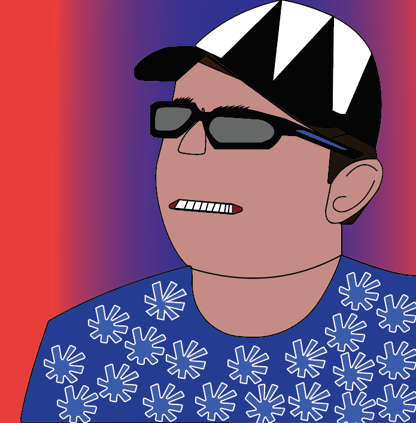

Billede manipulation


Jeg gennem min fritid og mit arbejde på en bar, fået til opgave at designe billeder, tapet og borde til en bar, som åbner når Corona er overstået. Igennem denne opgave har jeg lært hvordan man kan sætte mange forskellige billeder samme og skabe en masse nye billeder og motiver ud af simple stock billeder. Alle billederne som ses herover, er nogle jeg har lavet og udviklet sammen med klubben. Blandt de mange billeder er der også spil i, disse spil er designet, således at gæsterne der sætter sig ved bordet kan spille et spil imens de nyder deres drikkevare. Opgaven bestod også i at lave beerpong borde, som er designet efter kopper og generelle spilleregler.
Jeg gennem min fritid og mit arbejde på en bar, fået til opgave at designe billeder, tapet og borde til en bar, som åbner når Corona er overstået. Igennem denne opgave har jeg lært hvordan man kan sætte mange forskellige billeder samme og skabe en masse nye billeder og motiver ud af simple stock billeder. Alle billederne som ses herover, er nogle jeg har lavet og udviklet sammen med klubben. Blandt de mange billeder er der også spil i, disse spil er designet, således at gæsterne der sætter sig ved bordet kan spille et spil imens de nyder deres drikkevare. Opgaven bestod også i at lave beerpong borde, som er designet efter kopper og generelle spilleregler.
Video
Jeg har også arbejdet med at lave et par videoer under min først tid som studerende.
Til den første film, skulle vi lave en stopmotion film. Ud fra denne beskrivelse begyndte
vi som en gruppe at lave skelettet til selve filmen, med storyboard.
Det jeg lavede under selve denne opgave var at optage/tage alle billederne til filmen.
For at være sikker på at alle billederne var i samme stil og have samme kontrast,
skulle lyset og skyggerne være meget tæt på de samme. Derudover, skulle der tages et billede for hver gang pac-man rykkede sig,
så det skulle der også tænkes over.
Klimabomben, er en reklamevideo vi lavede til vores projekt 2, hvor vi skulle sælge et produkt vi havde
fremstillede til en udstillingsmesse. Til denne video, var jeg meget ind over selve historien og
hvordan vi skulle optage de forskellige scener. Her lærte jeg hvordan man vil kunne udnytte lyset i rummet,
til at skabe forskellige stemninger og hvordan et for stort rum kan ødelægge lyden til en film
Animation
Til dette projekt skulle jeg finde et maleri og animere det efterfølgende.
Jeg havde ikke lavet animationer før denne opgave, så det ville være min første animation.
Så denne opgave var meget ny for mig og jeg syntes selv jeg lærte meget af den.
Jeg valgte et maleri som havde noget med havet at gøre, for så ville jeg kunne
animere vandet. Her brugte jeg en kombination af mine evner i Photoshop og nye
evner til Animator, til at skabe et levende billede af mit valgte maleri.
Digital design
Vi har igennem tiden på uddannelsen, skulle stifte bekendtskab
med mange af Adobes programmer. En af opgaverne var at vi skulle tegne os selv i Adobe
Illustrator, kun med pen værktøjet. Opgaven i sig selv var meget underholdende og
jeg tegnede rigtig mange streger om, for at finde lige den jeg gerne ville have til
mit selvportræt
Processen i sig selv tog meget tid, men jeg syntes at jeg fik en forståelse
for programmet, således at jeg selv ville kunne lave noget i det senere.
Jeg valgte efterfølgende at designe mit eget logo til min hjemmeside. Så her kunne jeg
bruge mine evner jeg havde lært med streg billedet. til at kunne tegne mit eget logo.
Efter at have lavet billedet i illustrator, kunne jeg igen kombinere de evner med
Photoshop, til at gøre logoet mere livligt.
Et andet program vi skulle gøre bekendte ved er Adobe-Xd, dette program har jeg
brugt igennem mange af mine projekter, til at kunne fremstille prototyper af
forskellige produkter jeg gerne ville fremstille. Så under projekt 1, skulle vi
fremstille et redesign af en hjemmeside, som virkelig havde brug for det. Efter
lidt undersøgelse blev en side fundet, som sælger eksklusive boliger, men siden de
har nu er meget mørk og dyster. Derfor kom min gruppe og jeg i fællesskab op med et
design, som jeg så kunne fremstille i Xd. Således at vi ville kunne vise klienten
hvordan et redesign af deres hjemmeside kunne se ud.